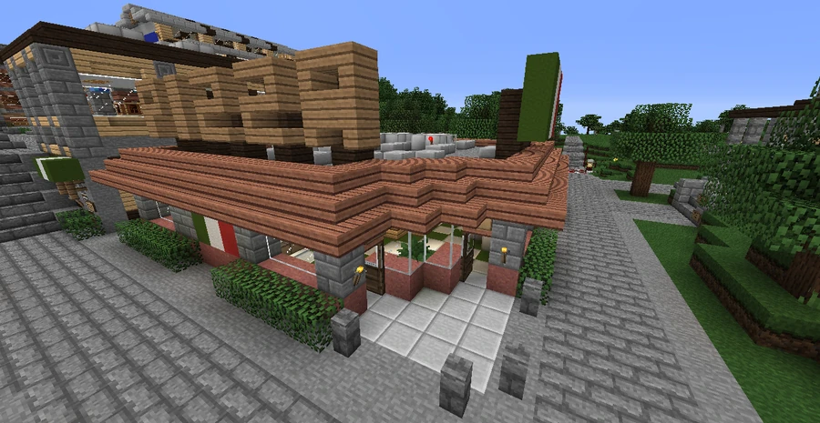
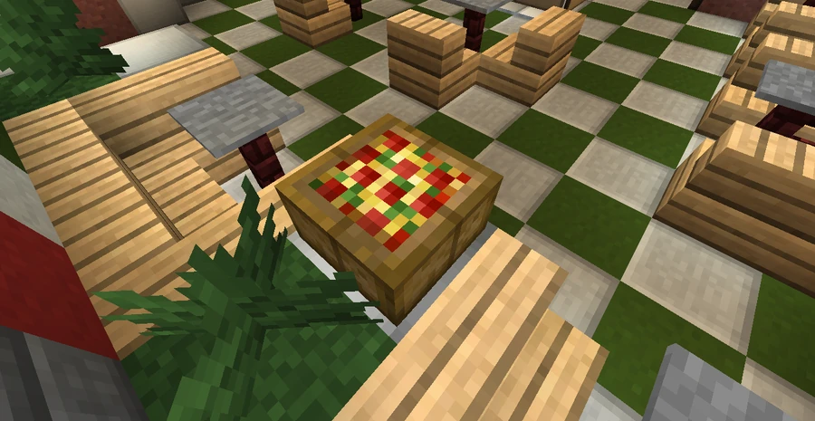
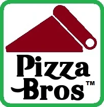

PizzaBros
A Broville restaurant chain serving Italian-style food, and a subsidiary of BroCORP Foods International. Its southern Downtown location stands opposite Plots Я Us.
Restaurant and services
Known for the slogan “Hella zza, brah”, PizzaBros offers different styles of pizza and side dishes including salad, pasta, BroWings, breadsticks and desserts. Service options include dining in, carry-out, delivery and the Super Special Saturday Buffet.
The described restaurant stands in the southern half of Downtown Broville, opposite Plots Я Us. PizzaBros™ is a registered trademark and subsidiary of BroCORP Foods International, associated with BroCORP.



BroMonster Pizza
Its best-remembered specialty is the BroMonster Pizza, measuring 30 inches, approximately 76 centimeters, across. Its satirical description combines high-starch white bread, sugary tomato paste, cheese substitute and every topping allowed by international food law.
The account presents the BroMonster as a staple of local cuisine and jokes about a supposed study of eating an entire one in a single sitting. The exaggerated list includes increased heart risk, diabetes, lung cancer, emphysema and extreme diarrhea, ending with a promise of good times and lots of fun. These claims belong to the product’s satire.
Gallery






See also
Sources and references
- v11.4.4 maps, signs, books and items World records
- PizzaBros · Broville Wiki Community archive
Text adapted and expanded from PizzaBros (contributors and history, revision 5005). Adapted text is available under CC BY-SA 3.0.